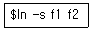
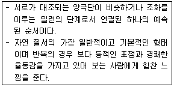
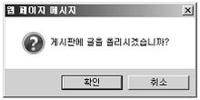
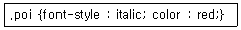
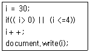
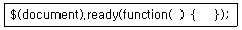

멀티미디어콘텐츠제작전문가 (2018-08-19 기출문제)
1과목: 멀티미디어개론
1. UNIX 명령어 중 현재 작업 디렉토리의 위치 정보를 알려주는 명령어는?
- kill
- mk
- pwd
- rm
(정답률: 69%)

2. 텍스트에서 사용하는 용어 중 각 글자의 문자 메트릭과 글자 쌍의 자간 조정을 의미하는 것은?
- 레딩(Leading)
- 커닝(Kearning)
- 세리프(Serif)
- 랜섬노트(Ransom-Note)
(정답률: 74%)
3. OSI-7 Layer에서 응용계층에 포함되는 프로토콜은?
- TCP
- TFTP
- ARP
- UDP
(정답률: 57%)
4. 양자화를 가장 잘 표현한 것은?
- 표본화 된 PAM 신호를 진폭영역에서 이산적인 값으로 변환
- 신호가 전송로를 점유하는 시간 분할
- 통화로의 분기 및 삽입 용이
- 전송 신호의 위상 변화
(정답률: 76%)
5. 각 픽셀을 박막 트랜지스터(TFT) 로 작동하게 하는 능동형 유기 발광 다이오드로, 전력 소모가 상대적으로 적으며 더 정교한 화면을 구현할 수 있는 장점이 있는 것은?
- LCD
- AMOLED
- PMOLED
- CRT
(정답률: 80%)
6. TFTP(Trivial File Transfer Protocol) 에 대한 설명으로 틀린 것은?
- TCP를 사용하는 연결형 파일 전송 프로토콜이다.
- 신뢰성이 부족하다.
- 별도 인증이 없어 속도가 빠르다.
- 파일 송수신 기능을 수행하도록 설계되었다.
(정답률: 58%)
7. 핵 시설이나 국가의 산업 기반 시설 등을 관리하는 시스템에 해커가 USB를 이용하여 침투하고 공격하는 군사적 사이버 무기 수준의 해킹기법은?
- 매크로
- 스파이웨어
- 스턱스넷
- 메일폭탄
(정답률: 71%)
8. 내부 사설 IP 주소를 공인 IP 주소로 매핑하여 공인 IP 주소가 부족할 때 또는 내부 사설 IP 주소를 보호하려고 할 때 사용하는 기술은?
- GSM
- BLE
- NAT
- LPWAN
(정답률: 75%)
9. 사운드에서 원음의 진폭이 기계가 수용하는 진폭보다 크거나 양자화 하여 나타낼 수 있는 진폭보다 큰 경우에 발생하는 현상은?
- 클리핑
- 디더링
- 지터 에러
- 양자화 오차
(정답률: 53%)
10. 미리 설계된 시간이나 임의환경 조건이 충족되면 스스로 모양을 변경 또는 제조하여 새로운 형태로 바뀌는 제품을 3D 프린팅 하는 기술은?
- 애그노스틱 기술
- 스펙트럼 센싱
- 4D 프린팅
- 3D 모델러
(정답률: 69%)
11. 프로그램, 문서, 웹사이트 등에서 사용자의 탐색경로를 시각적으로 제공해주는 사용자 인터페이스는?
- 용도 자유대역
- 브레드크럼즈
- 디지털 트윈
- 엠엔지
(정답률: 65%)
12. 리눅스 커널에서 페이징 유닛(Paging Unit) 이 하는 일은?
- 논리주소를 페이지 테이블로 매핑
- 선형주소를 물리주소로 변환
- 물리주소를 논리주소로 전환
- 물리주소를 페이지 테이블로 매핑
(정답률: 59%)
13. 다음의 유닉스 명령이 의미하는 것은?

- 파일 f1이 파일 f2를 가리키도록 시스템 링크를 만든다.
- 디스크 f2를 디스크 f1로 복사한다.
- 프로세스 f1이 프로세스 f2에 있는 위치로 이동한다.
- 경로명 f2가 경로명 f1을 가리키도록 소프트 링크를 만든다.
(정답률: 60%)
14. 반이중(Half-Duplex) 통신방식에 대한 설명으로 옳은 것은?
- 송신과 수신을 양쪽에서 할 수 있으나 동시에는 할 수 없다.
- 데이터 전송로에서 한 쪽 방향으로만 데이터가 흐르도록 하는 통신방식이다.
- 접속된 두 장치 간에 데이터가 동시에 양방향으로 흐를 수 있도록 하는 통신방식이다.
- 4선식 회선이 사용되나, 2선식 회선에서 주파수 분할로도 통신이 가능한 통신방식이다.
(정답률: 69%)
15. IPv6는 주소별 라우팅 특성에 따라 3개의 범주로 구분하는데 이에 해당하지 않는 것은?
- 유니캐스트 주소
- 라우팅 주소
- 멀티캐스트 주소
- 애니캐스트 주소
(정답률: 64%)
16. PEM(Privacy Enhanced Mail) 에 대한 설명으로 틀린 것은?
- 다양한 사용자 인터페이스 제공
- 미국 RSA 데이터 시큐리티사에서 개발
- 높은 보안성을 지원
- 메시지 무결성 등의 기능을 지원
(정답률: 63%)
17. 멀티미디어 콘텐츠를 생성, 거래, 전달, 관리, 소비하는 과정에서 광범위한 네트워크 및 터미널을 통해 멀티미디어 자원을 서로 호환할 수 있도록 사용하기 위한 멀티미디어 프레임 워크 표준 규격은?
- MPEG-2
- MPEG-7
- MPEG-21
- MPEG-Z
(정답률: 65%)
18. PCM 전송에서 송신 측 과정은?
- 표본화 → 양자화 → 부호화
- 표본화 → 부호화 → 양자화
- 부호화 → 양자화 → 표본화
- 부호화 → 표본화 → 양자화
(정답률: 68%)
19. 인터넷 전자서명에서 사용되는 해쉬(Hash) 함수에 대한 설명으로 틀린 것은?
- 해쉬 함수는 키를 사용하지 않으므로 같은 입력에 대해서는 동일한 출력이 나온다.
- HAS-160는 국내에서 개발한 대표적인 해쉬 함수다.
- 메시지의 오류나 변조를 탐지할 수 있는 무결성을 제공한다.
- 해쉬 함수는 양방향성을 갖는다.
(정답률: 60%)
20. 사용빈도가 높은 문자는 가장 짧은 코드로 표현하고, 가장 사용빈도가 낮은 문자는 가장 긴 코드로 표현하는 압축 방식은?
- 허프만 코딩 방식
- 줄길이 부호화 방식
- MPEG 방식
- JPEG 방식
(정답률: 69%)
2과목: 멀티미디어기획및디자인
21. 시각디자인(Visual Design) 과 가장 관계가 깊은 것은?
- 엔지니어링 디자인
- 도자기 디자인
- 건축 디자인
- 포스터 디자인
(정답률: 80%)
22. 멀티미디어 디자인에서 사용자의 주의를 집중시키기 위해 주로 사용하는 방법이 아닌 것은?
- 다른 색상이나 소리 첨가
- 애니메이션 사용
- 일관성 유지를 위해 동일한 크기의 폰트 사용
- 동화상(Moving Image) 을 통한 움직임 사용
(정답률: 77%)
23. 회색 바탕에 검정 선을 그리면 회색은 더 어둡게 보이고 하얀 선을 그리면 바탕의 회색이 더 밝아 보이는 현상은?
- 비렌 효과
- 베졸드 효과
- 페흐너 효과
- 푸르킨예 효과
(정답률: 70%)
24. 색의 잔상효과 중 하나로서 흑백으로 나눈 면적을 고속으로 회전시키면 파스텔 톤의 연한 유채색이 나타나는 현상은?
- 에브니 효과
- 페히너 효과
- 맥컬로 효과
- 보색잔상 효과
(정답률: 64%)
25. 컴퓨터그래픽의 색상 표현 모드에 대한 설명으로 옳지 못한 것은?
- HSB모드 – 색의 3속성인 색상, 채도, 명도를 바탕으로 색을 표현하는 방식
- Lab모드 – CIE에서 발표한 색체계로 채도축인 a와 명도축인 b의 값으로 색상을 정의하는 방식
- RGB모드 – 빛의 3원색인 빨강, 녹색, 파랑의 혼합으로 색을 표현하는 방식
- CMYK모드 – 인쇄나 프린트에 이용되며 Cyan, Magenta, Yellow, Black을 혼합하여 색을 표현하는 방식
(정답률: 72%)
26. 다음이 설명하는 디자인의 원리는?

- 변화
- 비대칭
- 강조
- 점이
(정답률: 60%)
27. 두 색이 경계부분에서 색의 3속성별로 대비현상이 더욱 강하게 나타나는 현상은?
- 채도대비
- 명도대비
- 연변대비
- 계시대비
(정답률: 62%)
28. 출력장치에 대한 설명으로 틀린 것은?
- 정보를 외부로 출력하는 것을 말한다.
- 대표적으로는 프린터, 플로터, 스캐너 등이 있다.
- 화면 디스플레이도 출력 장치에 속한다.
- 프린터 작업도 출력 장치에 속한다.
(정답률: 72%)
29. 현실이나 상상 속에서 제안되거나 계획된 일련의 사건들에 대한 개략적인 줄거리를 일컫는 말로, 스토리 보드를 작성하는데 토대가 되는 것은?
- 시나리오
- 플로우차트
- 가상현실
- 디지털 스토리텔링
(정답률: 77%)
30. 오늘날 타이포그래피는 넓은 의미로 해석되고 활용되고 있다. 다음 중 타이포그래피에 대한 설명으로 거리가 가장 먼 것은?
- 글자 디자인
- 활자 서체 선택과 배열
- 문자 또는 활판적인 기호를 중심으로 한 이차원적 표현
- 단순화된 그림으로 대상의 성질이나 사용법을 표시
(정답률: 83%)
31. 디자인 요소 중 시각적 요소에 속하지 않는 것은?
- 형태
- 색채
- 방향감
- 질감
(정답률: 70%)
32. 컴퓨터에서 사용하는 서체 중 글자의 가로, 세로 끝부분에 짧은 획이 붙어있는 세리프체가 아닌 것은?
- 바탕체
- 신명조
- 고딕체
- Times New Roman
(정답률: 75%)
33. 게슈탈트의 법칙에 해당하지 않는 것은?
- 유사성의 법칙
- 근접성의 법칙
- 복합성의 법칙
- 연속성의 법칙
(정답률: 71%)
34. 제품의 라이프 사이클(Product Life Cycle)은 제품이 시장에 도입된 후 시간이 경과함에 따라 매출액이 변화해가는 과정을 단계로 나눈 것이다. 다음 중 소비자의 인지도가 증가하여 생산수요가 급격히 증가하는 단계는?
- 성장기
- 성숙기
- 경쟁기
- 도입기
(정답률: 77%)
35. 신문광고에 관한 설명으로 틀린 것은?
- 시간과 공간을 극복하여 새로운 소식을 전달하는 인쇄 매체로서 특정한 독자층을 형성할 수 있어 정보의 생명력이 매우 길다.
- 정보로서의 신뢰도가 높고 상품에 대한 통계자료를 이용하여 자세한 내용을 알릴 수 있다.
- 대부분의 신문은 매일 발간되기 때문에 광고주의 요구에 따라 즉각적인 광고가 가능하다.
- 직업, 소득, 연령층에 관계없이 여러 독자층에게 어필할 수 있으며 매체의 도발 범위가 매우 넓다.
(정답률: 63%)
36. 색의 동화 현상에 대한 설명으로 맞는 것은?
- 색의 차이가 강조되어 지각되는 현상이다.
- 회색 바탕에 검은 선을 여러 개 그리면 바탕 회색은 더 밝게 보인다.
- 인접한 색들끼리 서로의 영향을 받아 인접한 색에 가깝게 보이는 현상이다.
- 빨강 바탕에 놓여진 회색은 초록빛 회색으로 보인다.
(정답률: 72%)
37. 편집디자인의 요소와 거리가 먼 것은?
- 옥외광고
- 타이포그래피
- 일러스트레이션
- 레이아웃
(정답률: 75%)
38. 자극으로 인해 색 지각이 생긴 후 그 자극이 없어져도 그 전의 상이나 그 반대의 상을 느낄 수 있는 것은?
- 주목성
- 잔상
- 동화
- 명시도
(정답률: 81%)
39. TV광고 중 프로그램 중간에 삽입되는 광고는?
- 로컬(Local) 광고
- 네트워크(Network) 광고
- 프로그램(Program) 광고
- 스파트(Spot) 광고
(정답률: 72%)
40. 제품디자인이 최종적 단계에 이르게 되면 실제 생산될 것과 똑같이 만들고 내부기계 장치까지 설치하여 동작방법과 성능, 부품사이의 간섭이나 결합 문제까지 세부적으로 검토할 수 있는 모델은?
- 러프 모델
- 프로토타입 모델
- 클레이 모델
- 스크래치 모델
(정답률: 78%)
3과목: 멀티미디어저작
41. HTML 태그를 이용하여 글자색을 붉은 색으로 할 때, ( ) 안에 추가할 알맞은 색상 코드는?
- #FF0000
- #D1FF00
- #000000
- #FFFF00
(정답률: 72%)
42. 자바스크립트의 Window 객체 중 다음 그림과 같이 다이얼로그 박스를 나타내는 메소드는?

- Open( )
- Prompt( )
- Alert( )
- Confirm( )
(정답률: 66%)
43. ＜a href＞ 태그에서 새 창에 target 페이지를 띄워주는 속성은?
- _self
- _parent
- _top
- _blank
(정답률: 68%)
44. 객체지향 설계에 사용되는 UML(Unified Modeling Language) 다이어그램이 아닌 것은?
- Class 다이어그램
- Attribute 다이어그램
- State 다이어그램
- Sequence 다이어그램
(정답률: 50%)
45. Rumbaugh 의 객체 모델링 기법 중 시스템에서 사용되는 객체들의 관계들을 표현함으로써 시스템의 정적인 자료구조를 기술하는 모델링은?
- 제어 모델링
- 클래스 모델링
- 객체 모델링
- 기능 모델링
(정답률: 56%)
46. HTML5의 선이나 도형에서 사용하는 그림자 속성에 대한 설명으로 틀린 것은?
- shadowColor : 그림자의 색깔을 지정할 수 있다.
- shadowLine : 값이 클수록 그림자 경계가 선명해진다.
- shadowOffsetX : 양수, 음수 값에 따라 각각 그림자가 오른쪽, 왼쪽으로 움직인다.
- shadowOffsetY : 양수, 음수 값에 따라 각각 그림자가 아래쪽, 위쪽으로 움직인다.
(정답률: 74%)
47. HTML 파일 내부의 style 태그에 아래 코드가 포함되어 있을 때 결과는?

- 태그 이름이 poi인 태그에 빨간 색상의 Italic 체로 스타일 시트를 지정한다.
- ID 속성의 값이 poi 인 태그에 빨간 배경 색상의 Italic 체로 스타일 시트를 지정한다.
- CLASS 속성의 값이 poi 인 태그에 빨간 색상의 Italic 체로 스타일 시트를 지정한다.
- STYLE 속성이 지정된 태그에 빨간 배경 색상의 Italic 체로 스타일 시트를 지정한다.
(정답률: 61%)
48. XML의 XSLT에 정의한 함수가 아닌 것은?
- Format-Number
- Current
- Element-Property
- Function-Available
(정답률: 45%)
49. 관계형 데이터베이스에서 불필요한 정보의 중복으로 인한 문제점이 없도록 릴레이션을 작게 분해하는 과정은?
- 동등 조인
- 인덱싱
- 정규화
- 튜플
(정답률: 53%)
50. 객체에 정의된 연산을 의미하며 객체의 상태를 참조 및 변경하는 객체의 멤버 함수를 의미하는 것은?
- Class
- Attribute
- Method
- Message
(정답률: 62%)
51. 관계 데이터 연산에서 관계대수의 순수 관계 연산자가 아닌 것은?
- Select
- Division
- Union
- Join
(정답률: 57%)
52. HTML 태그에서 cell spacing 에 대한 설명으로 옳은 것은?
- 표에는 거의 사용되지 않는다.
- 일반적으로 초기 값 0이 할당된다.
- 두 셀 사이의 여백 크기를 지정한다.
- 셀 가장자리와 셀 내용 사이의 여백을 지정한다.
(정답률: 60%)
53. 뷰(VIEW) 에 관한 설명으로 옳지 않은 것은?
- 하나의 뷰를 제거하면 그 뷰를 기초로 정의된 다른 뷰는 제거되지 않는다.
- SQL에서 뷰를 생성할 때 CREATE 문을 사용한다.
- 뷰는 가상 테이블이므로 물리적으로 구현되어 있지 않다.
- 필요한 데이터만 뷰로 정의해서 처리할 수 있기 때문에 관리가 용이하다.
(정답률: 55%)
54. HTML5 태그 중에서 형광펜을 사용하여 강조하는 효과를 나타내는 것은?
- ＜i＞
- ＜mark＞
- ＜keygen＞
- ＜small＞
(정답률: 80%)
55. XML문서의 구조적 정보를 제공하고 자바스크립트에서 문서 구조 외양 내용을 변경하여 접근하는 방법을 제공하는 모델을 의미하는 용어는?
- CSS
- DOM
- DOCUMENT
- SCRIPT
(정답률: 51%)
56. 자바스크립트 조건문에서 출력되는 값은?

- 0
- 4
- 30
- 31
(정답률: 63%)
57. 자바스크립트에서 Data 라는 이름으로 정수값 10을 저장하기 위한 변수 선언과 초기화 문장의 형태로 맞는 것은?
- Float Data = 10;
- Int Data = 10;
- Var Data = 10;
- Number Data = 10;
(정답률: 71%)
58. 데이터베이스에서 모든 데이터 개체, 제약 조건, 접근 권한, 보안 정책, 무결성 규칙 등을 명세한 것은?
- 구조 스키마
- 내부 스키마
- 매핑 스키마
- 개념 스키마
(정답률: 62%)
59. 아래 jQuery 문장의 단축 표현으로 옳은 것은?

- $(document)_(function( ) { });
- $(function( ) { });
- $Execute.(function( ) { });
- $CDATA.(function( ) { });
(정답률: 63%)
60. SQL 에서 DELETE 명령에 대한 설명으로 틀린 것은?
- 테이블의 행과 열을 삭제할 때 사용한다.
- WHERE절의 조건을 만족하는 레코드를 모두 삭제한다.
- 테이블을 완전히 제거하는 DROP과는 다르다.
- SQL문 'DELETE FROM 직원' 은 직원 테이블의 모든 레코드를 삭제한다.
(정답률: 51%)
4과목: 멀티미디어제작기술
61. 다음 중 가장 작은 해상도를 갖는 화면 규격은?
- 16CIF
- QCIF
- CIF
- 고선명 TV
(정답률: 53%)
62. 꽃이 피는 과정이나 곤충이 알에서 깨어나는 장면 등 긴 시간 동안 일어나는 현상을 짧은 시간에 함축하여 보여주려 할 때 유용한 기법은? (문제 오류로 실제 시험에서는 3,4번이 정답처리 되었습니다. 여기서는 3번을 누르면 정답 처리 됩니다.)
- 접사 촬영
- 적외선 촬영
- 인터벌 촬영
- 콤마 촬영
(정답률: 75%)
63. 음파가 1회 진동하는데 걸리는 시간은?
- 음압
- 주기
- 음색
- 주파수
(정답률: 58%)
64. 알파 채널에 대한 설명으로 옳은 것은?
- 크로마키 기법을 사용하기 위해 이미지를 두 개의 채널로 만든 것이다.
- 그래픽 상의 한 픽셀의 색이 다른 픽셀의 색과 겹쳐서 나타낼 때, 두 색을 효과적으로 융합하도록 해준다.
- 4개의 채널을 이용하는 CMYK보다 색을 자유롭게 쓸 수 없지만 다양한 표현이 가능하다.
- 선택 영역의 테두리 부분에 있는 픽셀을 부드럽게 처리하는 기능이다.
(정답률: 52%)
65. 양지향성과 단일 지향성 마이크를 음원에 가깝게 대고 사용하면 저음의 출력이 상승하는 효과는?
- 근접효과
- 회절효과
- 왜곡효과
- 반사효과
(정답률: 74%)
66. 애니메이션 동작의 기본 3원칙이 아닌 것은?
- 예비 동작
- 범프 동작
- 본(실행) 동작
- 잔여 동작
(정답률: 68%)
67. 철사 또는 특수 제작된 골격구조 위에 애니메이션용 점토를 입혀 점토모델을 만든 후 모델을 조금씩 변형시키면서 변화된 각각의 장면을 한 프레임씩 촬영해서 만들어지는 애니메이션 제작 방식은?
- 3D 애니메이션
- 클레이 애니메이션
- 셀 애니메이션
- 픽셀 애니메이션
(정답률: 80%)
68. 벡터(Vector) 방식에 대한 설명으로 옳은 것은?
- 벡터 객체는 같은 객체를 비트맵 형식으로 저장했을 때보다 많은 메모리를 차지한다.
- 대부분의 드로잉 프로그램들은 벡터 드로잉을 비트맵으로 변환하여 저장할 수 없다.
- 점, 선, 면의 좌표값을 수학적으로 저장하는 방식이기 때문에 아무리 확대를 해도 벡터 이미지가 깨지지 않는다.
- 래스터 그래픽스(Raster Graphics) 방식과 같은 의미다.
(정답률: 75%)
69. 이미지의 모든 컬러 정보와 알파 채널을 보존하고 손실 없는 압축 방법으로 파일의 크기를 줄이는 파일의 방식은?
- JPEG
- PCX
- PNG
- TIFF
(정답률: 64%)
70. 카메라 헤드가 위 아래로 움직이는 카메라 무빙 기법은?
- 팬(Pan)
- 틸트(Tilt)
- 줌(Zoom)
- 트레킹(Tracking)
(정답률: 76%)
71. 다음 중 MPEG-7에 대한 설명으로 옳은 것은?
- 오디오와 비디오 콘텐츠 인식에 대한 표준을 제공한다.
- 멀티미디어 데이터베이스 검색이 가능하도록 한다.
- MPEG-1과 MPEG-2를 대체할 수 있다.
- DVD 수준의 영상을 목적으로 제정되었다.
(정답률: 59%)
72. 영상관련 하드웨어 중 외부에서 입력되는 아날로그 영상신호와 컴퓨터 영상을 중첩시켜주는 기능을 하는 장치는?
- 프레임 그레버 보드
- 그래픽 카드
- 비디오 오버레이 보드
- MPEG 카드
(정답률: 65%)
73. 3D 애니메이션의 종류로 볼 수 없는 것은?
- 인형 애니메이션(Puppet Animation)
- 클레이 애니메이션(Clay Animation)
- 3D 캐릭터 애니메이션(3D Character Animation)
- 셀 애니메이션(Cell Animation)
(정답률: 74%)
74. 2개의 서로 다른 이미지나 3차원 모델 사이에서 점진적으로 변화해 가는 모습을 보여주는 애니메이션 기법은?
- 로토스코핑
- 모핑
- 모션 캡처
- 미립자 시스템
(정답률: 70%)
75. 비디오의 압축 과정으로 옳은 것은?
- 변환 → 전처리 → 양자화 → 가변길이 부호화
- 전처리 → 변환 → 양자화 → 가변길이 부호화
- 양자화 → 가변길이 부호화 → 변환 → 전처리
- 가변길이 부호화 → 변환 → 전처리 → 양자화
(정답률: 65%)
76. 여러 개의 음원 중 제일 먼저 도달되는 음원 쪽에 음상이 정위되는 현상은?
- 마스킹 효과
- 하스 효과
- 도플러 효과
- 비트 효과
(정답률: 56%)
77. 3차원 형상 모델링인 프랙털(Fractal) 모델에 대한 설명으로 거리가 먼 것은?
- 단순한 형태의 모양에서 출발하여 복잡한 형상을 구축하는 방식의 모델을 말한다.
- 자연물, 지형, 해안, 산, 혹성 등 표현하기 어려운 부분까지 표현해낼 수 있다.
- 대표적은 프로그램으로는 Bryce 3D가 있다.
- 점과 점 사이의 선분이 곡선으로 되어 있어 가장 많은 계산을 필요로 한다.
(정답률: 64%)
78. 3차원 컴퓨터 그래픽에서 면을 구성하는 최소 단위로 다각형을 의미하는 것은?
- Vertex
- Polygon
- Edge
- Object
(정답률: 76%)
79. 영상에서 사용되는 한 장면 한 장면을 말하며, 다른 의미로는 카메라의 시야에 들어오는 모든 범위를 말하기도 하는 영상의 기본 단위는?
- 풀 스크린(Full Screen)
- 프레임(Frame)
- 클립(Clip)
- 셀(Cell)
(정답률: 78%)
80. 캐릭터 애니메이션 제작 방식 중 마커(Marker) 또는 트랙커(Tracker) 라 불리는 센서를 부착하여 애니메이션을 생성하는 방식은?
- 웹(Web) 애니메이션
- 파티클(Particle) 애니메이션
- 모션 캡처(Motion Capture) 애니메이션
- 로토스코핑(Rotoscoping) 애니메이션
(정답률: 73%)